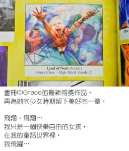

莎伦学生Grace Chen — 品格的表率
莎伦学生Grace Chen被哈佛大学提前录取－品格的表率上周四，哈佛大学公布了2015年提前录取名单，得到莎伦学生Grace Chen被哈佛大学录取的消息，感觉是实至名归！
Grace是个很低调的孩子，但是所有人谈起她，只有一句感慨：她很聪明！
教Grace是件很愉快的事，原本很多的困难甚至可能的挫折，到了她这里都不成为问题，以致於陈爸爸每次问我：＂Grace学得怎么样？＂我都说：＂没有问题！＂这种孩子不多。
当老师的，有满腔热情、满腹学识想教给学生。当有家长抱怨为什么自家的孩子进步不快时，当老师的怎么回答？
Grace却不一样。只要有足够的时间，你可以把满腹学识都教给她，给她最高的要求，她乐意接纳并快速吸取。
Grace在来莎伦画院之前，也在其他地方学过几年的绘画。我们始终不能明白，这么聪明又好学的学生，为何什么东西也没有学到？初入莎伦画院得从最基本的学起。
Grace悟性极高、动作利索、头脑清晰、井然有序。只需要给她提示、示范一次，她马上能够掌握并融汇贯通。她的自我管理能力、时间掌控能力、专注力、自我要求、进取心，以及她的亲和谦逊，让人舒心。
无论有多少事要忙，几年来的暑期加强班，每天下课后，她一定会主动帮忙课室的整理工作，一如她的风格：主动、迅速、干练、和气，低头做事不多言⋯⋯
如此低调的孩子是不太能受到大学名校的注意的，她的亲和又与哈佛的冷傲那么的不相搭⋯⋯这些年，大学名校给人的感觉是那么功利，不是校友亲属、非大富权贵名门之后，不肯吹牛皮、不是能说会道，死缠烂打加上捐巨款。毫无背景的＂美国出生的华裔女生＂是难上加难的代名词。
当全世界千万有能力的家长，各显神通在为自己的儿女想尽法子，打点进入哈佛窄门的时候，录取，对于Grace来说，是那么的困难又是那么的容易与顺理成章。
实实在在的具有卓越品格的学子，名校不收收谁呢？这一次哈佛大学让我安心。
Grace的获得是必然的，且不说其他方面她如何优秀，从绘画学习上就可以看出来。无论怎么忙碌，她都会把绘画课䃼上来，并且在家里认真地完成绘画作业。写实作品画到一个阶段后，老师要求她尝试不同绘画题材与艺术表现手法，她同样认真做到。在绘画作品集完成后又主动让我审视她所有的作品。不像许多学生一样，永远要老师推着走，使性子耍脾气，和老师讨价还价，拖拖拉拉。
因此，Grace能从新泽西Bridgewater高中3000多位学生中脱颖而出，成为2015年仅有的一位哈佛大学的提前录取者。
这所庞大的高中，近年来出了很多莎伦学生，进入耶鲁、哥伦比亚、伦敦中央圣马丁设计学院、罗得岛设计学院⋯⋯
(December, 2014)